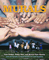
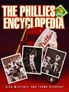
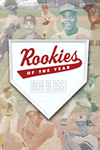
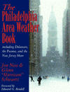

|
The
Eagles Encyclopedia
Ray Didinger and Robert S. Lyons
"The Eagles Encyclopedia is packed with the kind
of arcane statistics that your friends will launch at each other
during games for years to come. Of course, this could be aiding
and abetting a Birds addiction, but The Eagles Encyclopedia
is sure to shine under any E-A-G-L-E-S Christmas tree."
—Philadelphia Style |
|
Veterans
Stadium
Field of Memories
Rich Westcott
"Terrific... well researched... crammed with memories, some
gaudy, some goofy, some grim."
—The Philadelphia Daily News |
 |
P
Is for Philadelphia
Susan Korman
"In addition to the text being exclusively about our home,
and having lots of pretty pictures, the book is special because
P is for Philadelphia is illustrated by the children of
Philadelphia."
—Philadelphia Daily News |
 |
Philadelphia
Murals and the Stories They Tell
Jane Golden, Robin Rice and Monica Yant Kinney, photographs by David
Graham and Jack Ramsdale
In this lavishly illustrated chronicle of the Mural Arts Program,
you will see the murals in all of their beauty and learn about their
inspiring legacies in neighborhoods throughout the city. |
 |
The
Phillies Encyclopedia
Third Edition
Rich Westcott and Frank Bilovsky
"[T]his work offers much more fascinating, in-depth, team-related
information. For the third time, The Phillies Encyclopedia is affectionately
well done and should be an essential purchase in the Philadelphia
region."
—36th Volume of the American Reference Books Annual |
|
Philadelphia
magazine's Ultimate Restaurant Guide
edited by April White
"The [book] nicely wraps up some of the best and most popular
eateries that the Philadelphia area had to offer, as well as some
of the best writing about those places."
—The Legal Intelligencer |
 |
Rookies
of the Year
Bob Bloss
"A thorough and comprehensive look into a fascinating part
of baseball lore. Bloss expertly traces the fates—both good
and bad—of winners of this coveted award which can be bestowed
only once in a career, Rookie of the Year."
—Ernie Harwell, Hall of Fame baseball broadcaster |
 |
The
Phillies Reader
Updated Edition
edited by Richard Orodenker
"Orodenker has assembled some great material from truly superb
writers.... The writing is so good that even those who detest the
Phillies but love baseball will appreciate the 46 essays collected
here."
—Philadelphia Style |
 |
The
Beat of My Drum
An Autobiography
Babatunde Olatunji
"Olatunji taught this country—white and black—the
glories of West African music and dance. His message is now being
carried on by thousands of younger people in different parts of
the U.S.A. It is good to have this book, with his words, to tell
his story more completely."
—Pete Seeger |
|
The
Education of a University President
Marvin Wachman
"Wachman emerge[s] from [his] memoir as [a] highly accomplished
yet modest leader who demonstrate[s] that [he is a] worthy role
model for future generations of college presidents and administrators.
General readers and specialists will benefit from the lessons learned
and shared by [this] distinguished university president."
—ForeWord |
|
The
Spirits of America
A Social History of Alcohol
Eric Burns
"Eric Burns' book is as lively and engaging as a tailgate
party on a Saturday afternoon, yet as sobering as a car wreck and
a diagnosis of addiction. Reading this epic of desire and destruction
is to see our story magnified through the bottom of a bottle. It's
history by the shot glass."
—Bill Moyers |
|
The
Black Female Body
A Photographic History
Deborah Willis and Carla Williams
"This collection of rare and controversial photographs by
itself makes The Black Female Body an important volume
for the general reader, cultural historian or photo enthusiasts."
—Black Issues Book Review |
 |
The
Philadelphia Area Weather Book
Jon Nese and Glenn Schwartz
"When it comes to Philadelphia weather, Jon Nese and Glenn
'Hurricane' Schwartz know what's going on. Now, you can get the
best of their knowledge about your weather in a clear, concise,
fun book."
—Al Roker, NBC's Today Show |
 |
Philadelphia
Jewish Life, 1940-2000
edited by Murray Friedman
In this new edition, Friedman takes the history of Philadelphia
Jewish life to the close of the twentieth century, and looks back
on how Jews have shaped—and have been shaped by—Philadelphia
and its long immigrant history. |